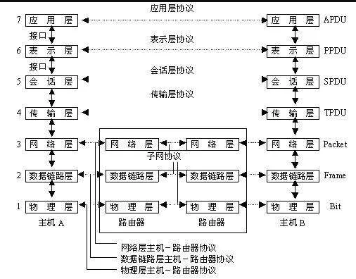

1.1 计算机网络出现的背景
计算机网络按照规模划分可以划分为WAN（广域网）、LAN（局域网）
- WAN指覆盖多个远距离区域的远程网络。比广域网在小一级的、连接整个城市的叫做城域网。
- 局域网指一个楼层、一栋或一个校园等相对较小的区域内的网络。
1.2计算机网络发展的七个阶段
| 年代 | 内容 |
|---|---|
| 20世纪50年代 | 批处理时代 |
| 20世纪60年代 | 分时系统时代 |
| 20世纪70年代 | 计算机间通信时代 |
| 20世纪80年代 | 计算机网络时代 |
| 20世纪90年代 | 互联网普及时代 |
| 2000年 | 以互联网为中心时代 |
| 2010年 | 无论何时何地皆以TCP/IP的网络时代 |
1.3 协议
1.3.1 CPU、OS以及内核的作用？
- CPU为中央处理器，如同一个计算机的心脏，每个程序实际上是由它来进行调度执行的。CPU的性能很大的程度上决定着一台计算机的处理性能。
- OS为操作系统，是一种基础软件，集合了CPU管理、内存管理、计算机的外围设备管理以及程序运行管理等重要功能。
1.3.2分组交换协议
- OS为操作系统，是一种基础软件，集合了CPU管理、内存管理、计算机的外围设备管理以及程序运行管理等重要功能。
- 分组交换协议是指将大数据分割为一个个叫做包的较小的单位进行传输的方法。计算机通信会在每一个分组中附加上源主机地址和目标主机地址。这些发送端地址、接收地址以及分组序号写入的部分称之为"报文首部" 。
1.4 协议由谁来制定？
1.5 协议分层与OSI参考模型
| 序号 | 分层名称 | 功能 | 每层的功能概览 |
|---|---|---|---|
| 7 | 应用层 | 针对特定应用的协议 | 针对每个应用的协议：电子邮件协议、远程登录协议、文件传输协议。 |
| 6 | 表示层 | 设备固有数据格式和网络标准数据格式的转换 | 接收不同表现形式的信息，如文字流、图像、声音等 |
| 5 | 会话层 | 通信管理。负责建立和断开通信连接（数据流动的逻辑电路）。管理传输层以下的分层。 | 负责何时建立连接，何时断开连接以及保持多久的连接？ |
| 4 | 传输层 | 管理两个节点之间的数据传输。负责可靠传输（确保数据被可靠的传送到目标地址）。 | 是否有数据丢失？ |
| 3 | 网络层 | 地址管理与路由选择 | 经过哪个路由传递到目标地址？ |
| 2 | 数据链路层 | 互连设备之间传送和识别数据帧 | 数据帧与比特流之间的转换 |
| 1 | 物理层 | 以“0”、”1“代表电压的高低、灯光的闪灭。界定连接器和网线的规格。 | 比特流与电子信号之间的切换 |
- 表示层：
- 表示层与表示层之间为了识别编码格式也会附加首部信息，从而将实际传输的数据转交给下一层去处理。
- 会话层：
- 会话层也像应用层或表示层那样，在其收到的数据前端附加首部或标签信息后转发给下一层。而这些首部或标签中记录着数据传输顺序的信息。
- 传输层
- 主机A确保主机B之间的通信并准备发送数据，着一个过层叫做”建立连接“。
- 两个主机之间爱呢创建的逻辑上的通信连接的断开与连接是传输层的主要作用。
- 传输层为了确保所传输的数据到达目的地址，会在通信两端的计算机之间进行确认，如果数据没有到达，它会负责重发。
- 网络层
- 网络层的作用是在网络与网络互连的环境中，将数据从发送端主机发送到接收端主机。
1.6. 七层通信流程图

1.7. 传输方式的分类
1.7.1 面向有连接型与面向无连接型
- 面向有连接型
- 面向有连接型中，在发送数据之前，需要在收发主机之间连接一条通信线路。（在通信传输之前，先打开一个连接。连接被关闭时无法发送数据）
- 面向无连接型
- 面向无连接型则不要求建立和断开连接。发送端可以在任何的时候自由发送数据。反之接收端也永远不知道之际何时从哪里接收到数据。
1.7.2 电路交换与分组交换
- 网路通信方式大致分为两种方式：电路交换（过去的电话线路）以及分组交换（较新的，TCP/IP采用）。
- 分组交换
- 在分组交换的处理过程是：发送端计算机将数据分组发送给路由器，路由器收到这些分组数据以后，缓存到自己的缓冲区，然后在发送给目标计算机。
- 在分组交换中，计算机与路由器之间以及路由器与路由器之间通常只有一条通信线路。
1.7.3 根据接收端数量分类
- 在网络通信当中，根据目标地址的个数及其后续的行为对通信进行分类如下：
- 单播
- 广播
- 多播
- 任播
1.8 地址
- 地址的层次型
- mac地址和IP地址在标识一个通信主体时虽然都具有唯一性，但是只有IP地址具有层次型。
- Mac地址----mac地址是由设备制造商针对每块网卡进行分别指定。可以通过制造商别号、制造商内部产品编号以及产品通用编号确保mac地址的唯一性。
- IP地址是如何实现分层的？
- IP地址由网络号和主机号两部分组成。即使IP地址不同，若主机号不同，网络号相同，说明他们处于同一个网段。